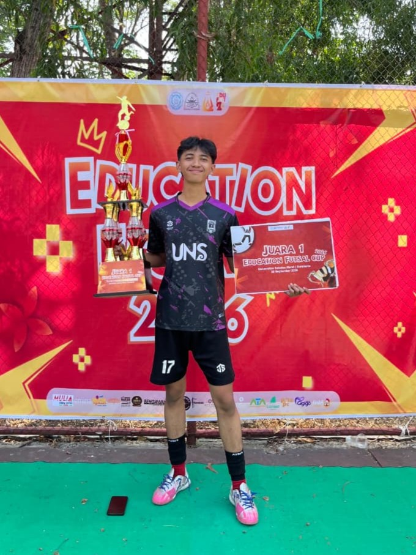

Saya lahir dan tumbuh di Desa Munggur, Kecamatan Mojogedang, Kabupaten Karanganyar. Perjalanan pendidikan saya dimulai dari SD Negeri 02 Munggur, sebelum akhirnya melanjutkan ke SMP Negeri 1 Mojogedang dan SMA Negeri 1 Karanganyar. Lingkungan tempat tinggal dan pengalaman belajar di Karanganyar membentuk fondasi karakter serta ketertarikan saya terhadap dunia pendidikan dan teknologi sejak usia muda.
Saat ini, saya sedang menempuh pendidikan tinggi di Universitas Sebelas Maret pada program studi Pendidikan Teknik Informatika dan Komputer (PTIK). Sejalan dengan minat mendalam saya pada bidang teknologi informasi dan desain visual, saya juga aktif mengasah keterampilan serta berkontribusi dalam organisasi mahasiswa sebagai staf Media dan Informasi. Pengalaman akademik dan organisasi ini menjadi sarana bagi saya untuk terus berkembang di industri kreatif serta teknologi modern.